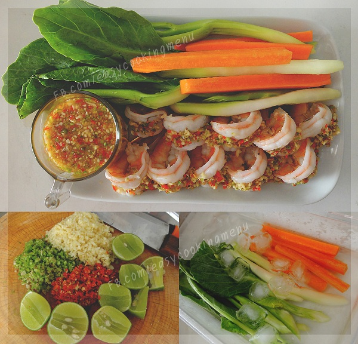

กลับสู่หน้าแรก
วิธีการทำกุ้งมะนาว

ส่วนประกอบ
กุ้งขาว (แกะเปลือกผ่าหลัง)
รากผักชีสับละเอียด 3 ช้อนโต๊ะ
กระเทียมสับละเอียด 3 ช้อนโต๊ะ
วิธีการทำ
กุ้งขาว (แกะเปลือกผ่าหลัง)
รากผักชีสับละเอียด 3 ช้อนโต๊ะ
กระเทียมสับละเอียด 3 ช้อนโต๊ะ